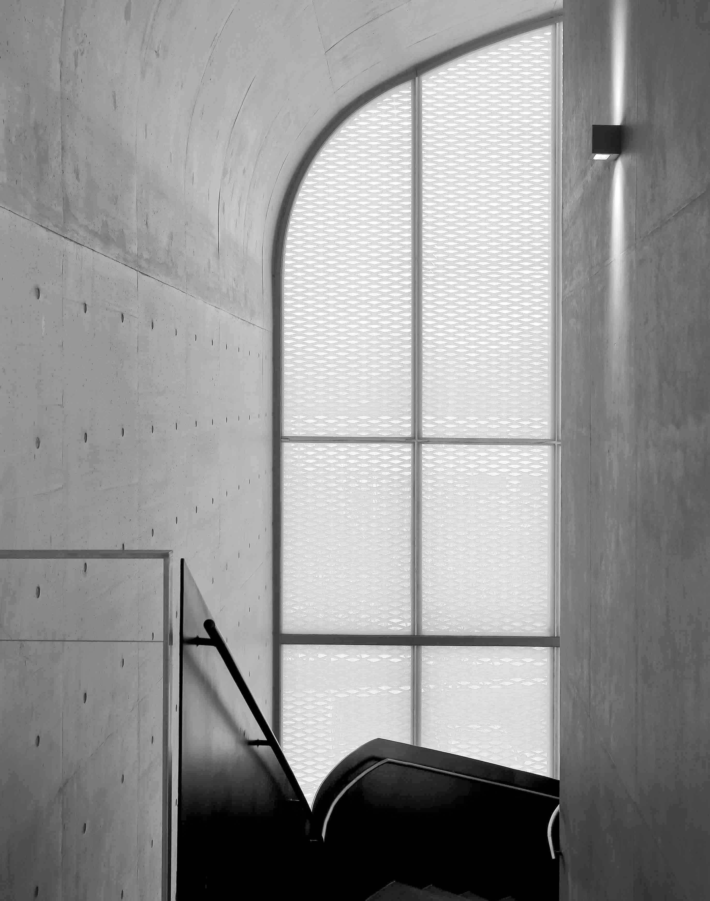
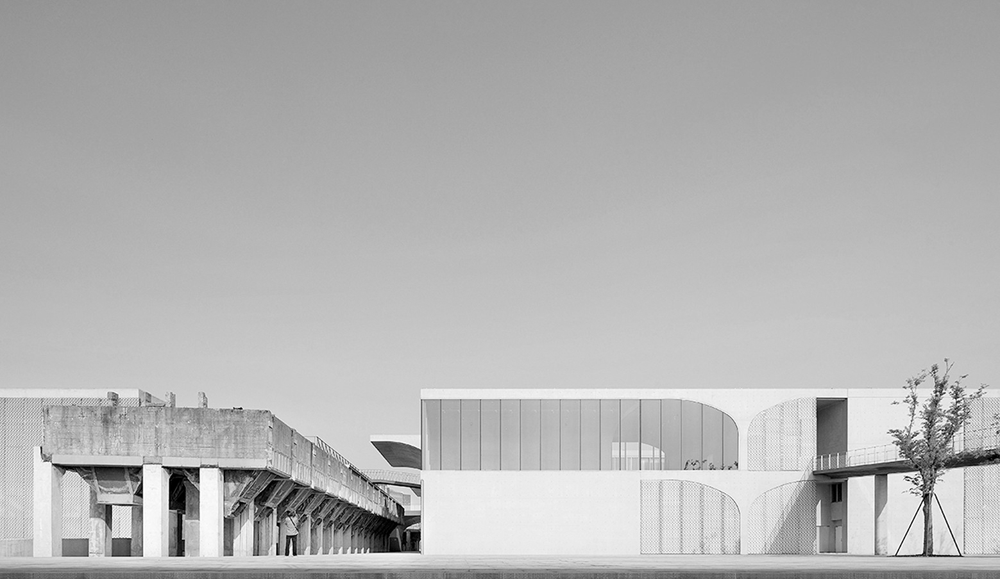

Umbrella is a sans-serif typeface inspired by the brutalist design of the Long Museum in Shanghai. It is an elegant typeface embracing the idea of interchangable components, similar to the prefabricated concrete conlumns which gave the Long museum its unique look. Perfect for heading, signage display, and wall decor, Umbrella would be best if applied on a large scale.


The idea for Umbrella came from the architectural design of the Long Museum. Being a part of the city’s renovation project of the old West Bund harbor, the museum was built on an old coal loading station. All facades of the building are made of exposed raw concrete that carries the spirit of modern brutalism. Inside the museum is a complex map of geometric arches extending out from the modular, canopy-shaped columns which is integral to the architectural form. The unique design was identified by architects as the “Vault-Umbrella” structure as each column is a cantilevered structure that functions both as a major supporting structure and a modular system of spacial organization for the museum. Thus the name of the typeface is sourced directly from the term which defines the the museum’s fundamental formal elements.
The features of Umbrella begin with its upright verticals and horizontals connected by tight, smooth geometric curves, which is an homage to the museum’s “Vault-Umbrella” structure. It’s elegant, high contrast letter-from implies the contrast between the museum’s substantial use of raw concrete and thin tempered glass. The typeface, when put together, feels rigid, hardened, yet with delicate touches. Making it effective at communication and ornamenting a gallery space. As it is perfect for the museum’s signage system, it can also be applied as a decorative element integral to the museum’s visual identity.